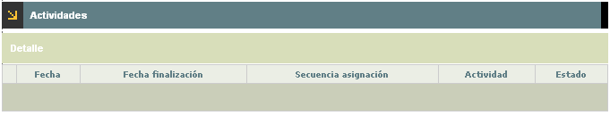
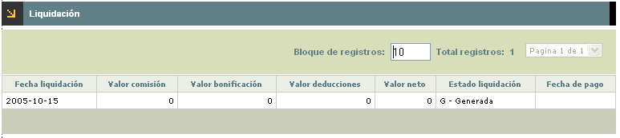

Liquidación de comisiones
Una vez finalizadas las tareas por cada promotor, llega el momento de realizar la liquidación correspondiente de los valores devengados por la culminación de sus tareas, y las respectivas deducciones que se deben aplicar, todo esto de acuerdo con los parámetros establecidos. Esta función permite conocer detalladamente las actividades asignadas a cada funcionario promotor.
El formulatio inicial muestra la información correspondiente a los funcionarios promotores sobre quienes se realizará la liquidación de sus valores devengados.
El formulario cuenta con las opciones de Actividades, Liquidación; y cuenta con un filtro que permite filtrar a través del campo Promotor.

Actividades: En este espacio consultan las actividades asignadas a cada funcionario promotor y su respectivo estado.

Fecha |
Corresponde a la fecha en que ingresó determinada solicitud a determinado estado. |
Fecha finalización |
Campo en formato YYYY-MM-DD con la cual finalizó la gestión de la actividad. |
Secuencia asignación |
Número secuencial que el sistema otorga a cada tarea asignada. |
Actividad |
Este campo muestra el código y la descripción de la tarea asignada al funcionario promotor sobre la cual se liquidarán los valores devengados de acuerdo con los parámetros. |
Estado |
En este campo se muestra el estado final de la actividad siendo la base para liquidación de comisiones y/o bonificaciones. |
Liquidación:Una vez la entidad conoce las actividades y el estado de las misma procede a su liquidación lo que implica el abono de los valores devengados por el funcionario promotor.

Fecha liquidación |
Campo en formato YYYY-MM-DD que informa acerca del momento en que se realizó la liquidación para pago de las tareas terminadas por el funcionario promotor. |
Valor comisión |
Muestra el total devengado por el promotor por concepto de comisiones por la terminación de las tareas asignadas. |
Valor bonificación |
Indica del valor total devengado por el funcionario promotor por la culminación de actividades de determinada solicitud que fueron definidas como cumplimiento de metas. |
Valor deducciones |
Este campo registra el total de los descuentos que se aplicarán al promotor los cuales están directamente relacionados con los conceptos definidos para tal fin. |
Valor neto |
Presenta el total devengado por el funcionario promotor luego de realizar el cálculo matemático del total de sus comisiones y bonificaciones menos el total de las deducciones. |
Estado liquidación |
Informa acerca del abono al funcionario promotor, el campo provee de una lista valores los cuales son: Pagado, informa si el valor calculado ya fue abonado al funcionario promotor o Generado que indica si aún no se ha realizado el abono sino que por el contrario sólo se han hechos los cálculos de los valores por abonar. |
Fecha pago |
En el caso que el campo inmediatamente anterior indique que el estado de la liquidación es ‘pagado’, entonces este campo informa la fecha en la que ocurrió tal evento. |
Botones de selección: Permite marcar o desmarcar de manera simultánea todos los agentes promotores a los que se les realizará la liquidación de las comisiones y/o bonificaciones a que haya lugar.